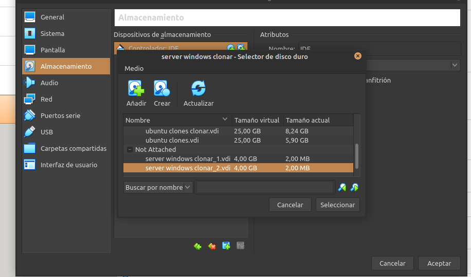
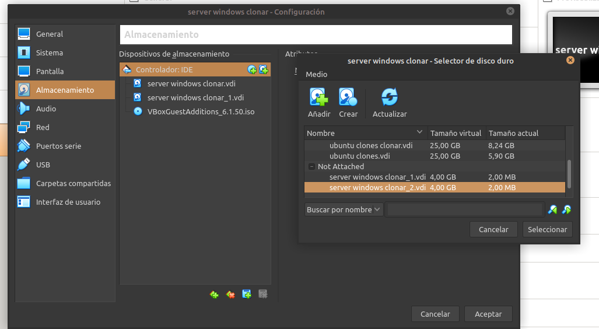
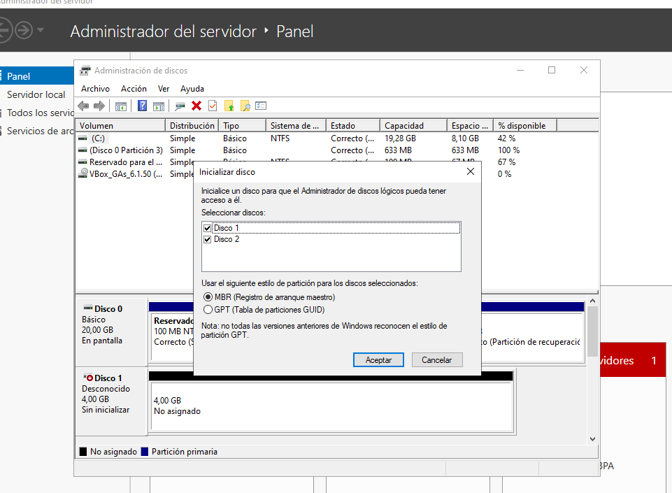
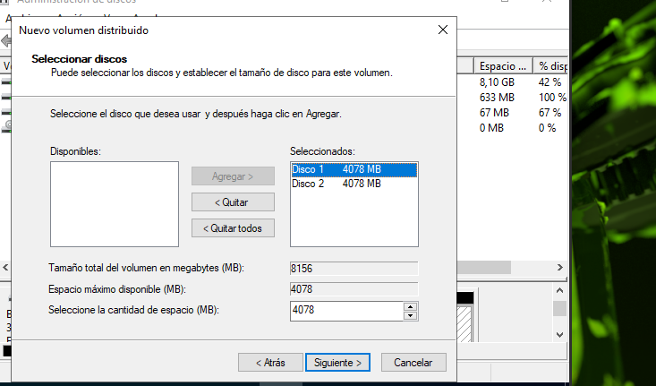
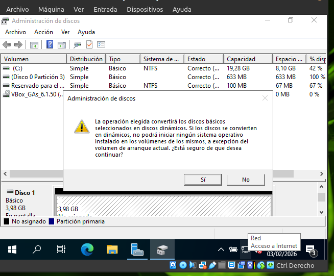
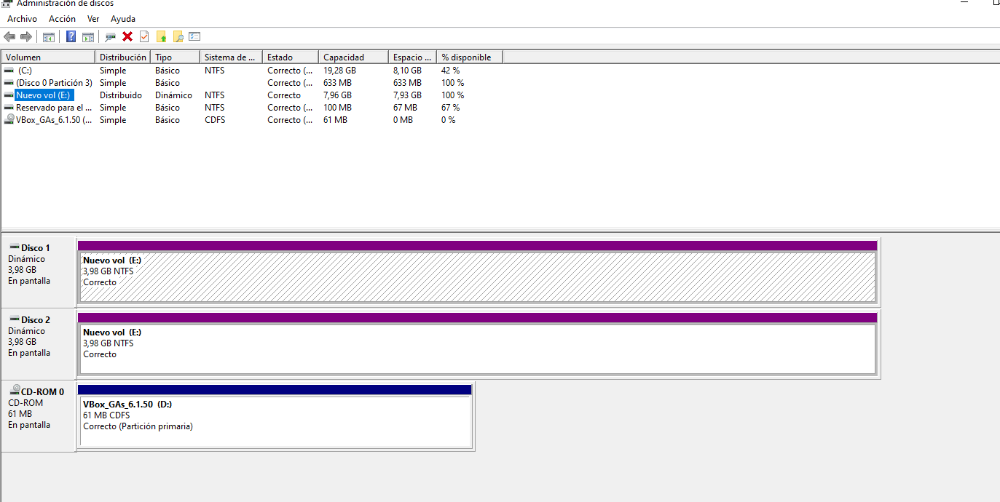

Ejercicio 1 – Creación de un volumen distribuido
En esta práctica se ha creado un volumen distribuido en Windows Server utilizando dos discos dinámicos, con el objetivo de ampliar la capacidad de almacenamiento del sistema.
Paso 1: Añadir los discos a la máquina virtual
Se añaden dos discos duros virtuales de 4 GB a la máquina de Windows Server desde la configuración de almacenamiento.
Captura: Adición de los discos duros virtuales en VirtualBox.
Paso 2: Acceso al Administrador de discos
Se accede al Administrador de discos, donde el sistema detecta automáticamente los nuevos discos como no inicializados.
Captura: Detección de los nuevos discos en el Administrador de discos.
Paso 3: Inicialización de los discos
Los discos se inicializan utilizando el estilo de partición GPT para permitir su uso por el sistema.
Captura: Inicialización de los discos seleccionando GPT.
Paso 4: Discos sin asignar
Tras la inicialización, los discos aparecen como espacio sin asignar, listos para ser utilizados en la creación del volumen.

Captura: Discos correctamente inicializados y sin asignar.
Paso 5: Creación del volumen distribuido
Se utiliza el asistente de nuevo volumen distribuido y se seleccionan ambos discos para formar una única unidad lógica.
Captura: Selección de los discos para el volumen distribuido.
Paso 6: Conversión a discos dinámicos
Windows Server solicita confirmación para convertir los discos básicos en discos dinámicos, requisito necesario para este tipo de volumen.
Captura: Advertencia de conversión a discos dinámicos.
Paso 7: Volumen creado y comprobación
Una vez finalizado el proceso, se comprueba que el volumen distribuido se ha creado correctamente y que la capacidad corresponde a la suma de ambos discos.
Captura: Volumen distribuido creado y funcionando correctamente.
Ejercicio 2 – Uso de un volumen distribuido en una empresa
Un volumen distribuido puede utilizarse en una empresa para ampliar rápidamente la capacidad de almacenamiento sin necesidad de sustituir discos existentes.
Es especialmente adecuado para almacenar datos no críticos, como archivos temporales, material de formación o información que puede regenerarse fácilmente.
También resulta útil en entornos de pruebas o laboratorio, donde se prioriza el bajo coste y la disponibilidad de espacio frente a la tolerancia a fallos.